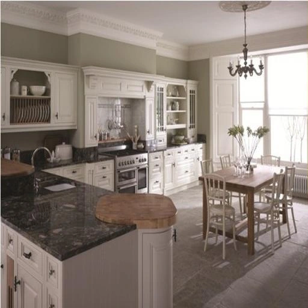
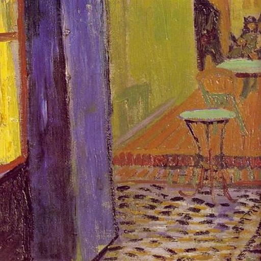

Abstract
Diffusion-based style transfer faces two fundamental questions: which regions should prioritize structure preservation and which are more amenable to texture transfer (the where question), and how to achieve such region-aware stylization without corrupting content (the how question). Existing methods typically rely on a single mechanism to control local structure, local texture, and global style together, making them fragile in region-rich scenes: uniform stylization strength may distort salient objects, while conservative control leaves texture-dominant regions under-stylized. We propose StyleRoute, a region-aware diffusion stylization framework that explicitly separates where style should be transferred from how the transfer should be optimized. For the where question, StyleRoute infers a region-level routing variable from structure confidence, texture confidence, and route disagreement, deciding per region whether to protect structure or to inject texture. For the how question, StyleRoute coordinates the regional routing with diffusion optimization to guide global style evolution, suppress style-content conflicts, and stabilize coarse layout. Together, StyleRoute transforms the implicit style-content trade-off into an explicit, interpretable, and region-aware transfer process. Experiments on diverse content-style pairs show consistent improvements over prior diffusion-based and region-matching stylization methods.
Method Overview
Static region planning builds structure and texture donors. A stability-guided router allocates regional transfer, while conflict-aware projection coordinates global style and content preservation.
Qualitative Results
Select a scene to explore its content image, style reference, and StyleRoute output.


Across portraits and architecture
Each column shares a style reference; each row shares a content image.
Comparison with Other Methods
Matched content and style references across the evaluated methods.
Quantitative comparison
Original held-out evaluation, Table 1. Lower is better for every metric.
| Method | ArtFID ↓ | FID ↓ | LPIPS ↓ | CFSD ↓ | B-Gram ↓× 10⁻³ |
|---|---|---|---|---|---|
| StyTR² | 35.30 | 23.69 | 0.4299 | 0.0608 | 2.268 |
| StyleID | 33.34 | 20.14 | 0.5776 | 0.1683 | 3.424 |
| CoCoDiff | 33.99 | 20.27 | 0.5984 | 0.1882 | 3.436 |
| InstantStyle | 43.70 | 26.50 | 0.5890 | 0.2726 | 3.669 |
| AD | 30.21 | 19.49 | 0.4743 | 0.0759 | 2.492 |
| CSGO | 33.37 | 20.85 | 0.5269 | 0.1643 | 3.044 |
| StyleGallery | 28.90 | 19.51 | 0.4090 | 0.0602 | 2.314 |
| StyleGallery + SAM | 28.97 | 19.56 | 0.4087 | 0.0601 | 2.314 |
| StyleRoute Ours | 28.29 | 19.11 | 0.4070 | 0.0551 | 2.190 |
ArtFID combines FID and LPIPS. CFSD evaluates content structure; B-Gram evaluates matched local style statistics. Definitions and additional evaluations are provided in the paper.
What each component contributes
Removing regional routing, global alignment, or projection changes the balance between content and style.
The evaluated non-painting categories show mixed content–style trade-offs. Performance depends on segmentation and donor quality; broader backbone compatibility remains unvalidated.
BibTeX
@inproceedings{lin2026styleroute,
title = {StyleRoute: Diffusion Style Transfer via Regional Routing and Conflict-aware Projection},
author = {Lin, Xunhao and Sun, Yu and Ding, Xinpeng and Gao, Fei and Qiao, Maoying and He, Lihuo and Wang, Nannan},
booktitle = {Advances in Neural Information Processing Systems},
year = {2026}
}